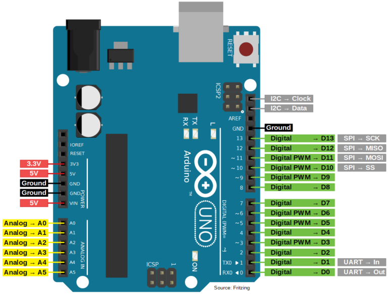

O Arduino Uno é uma das placas de desenvolvimento mais populares para projetos eletrônicos. Seu
microcontrolador, presente no coração da placa, é responsável por controlar todos os aspectos do sistema e
executar os programas criados pelos usuários.
O microcontrolador do Arduino Uno é um ATmega328P, fabricado pela empresa Atmel. Ele possui 32 KB de memória
flash para armazenar o programa, 2 KB de memória SRAM e 1 KB de memória EEPROM. Além disso, o
microcontrolador possui uma série de periféricos integrados, como conversores analógico-digitais, timers e
comunicação serial.
O Arduino Uno possui 6 entradas analógicas, que podem ser usadas para ler sinais analógicos como sensores de
temperatura, luz ou som. Essas entradas possuem uma resolução de 10 bits, o que significa que podem detectar
valores de 0 a 1023.
A linguagem de programação utilizada no Arduino Uno é baseada em C++, com algumas funções específicas para
lidar com os periféricos do microcontrolador. É uma linguagem de programação fácil de aprender e muito
utilizada na comunidade maker.
O shield do Arduino Uno é uma placa de expansão que se encaixa na parte superior da placa principal e
permite adicionar funcionalidades extras ao sistema. Existem diversos tipos de shields disponíveis, como
shields para controle de motores, shields para conexão com a internet ou shields para controle de displays.
A voltagem recomendada para alimentar o Arduino Uno é de 7 a 12 volts. É importante usar uma fonte de
alimentação adequada para evitar danos à placa ou a outros componentes do sistema. Além disso, é possível
alimentar a placa por meio de um cabo USB conectado a um computador.

Exemplo do thinkercad
O Arduino no Tinkercad é uma plataforma de simulação online que permite aos usuários criar e simular
projetos do Arduino sem a necessidade de ter uma placa física. É uma ótima maneira de aprender a
programar e testar o código sem gastar dinheiro em componentes eletrônicos físicos. O Tinkercad oferece
uma ampla variedade de componentes eletrônicos virtuais, como LEDs, sensores e atuadores, que podem ser
usados para criar projetos do Arduino. Além disso, a plataforma também oferece tutoriais e exemplos para
ajudar os usuários a começar. É uma ótima opção para estudantes, professores e entusiastas da eletrônica
que desejam aprender e experimentar com o Arduino sem gastar dinheiro em componentes físicos.